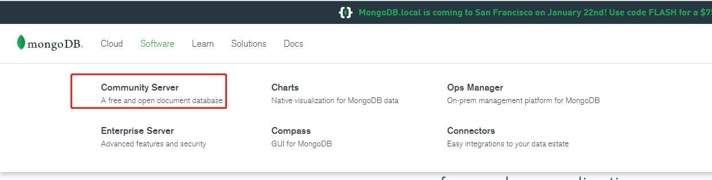
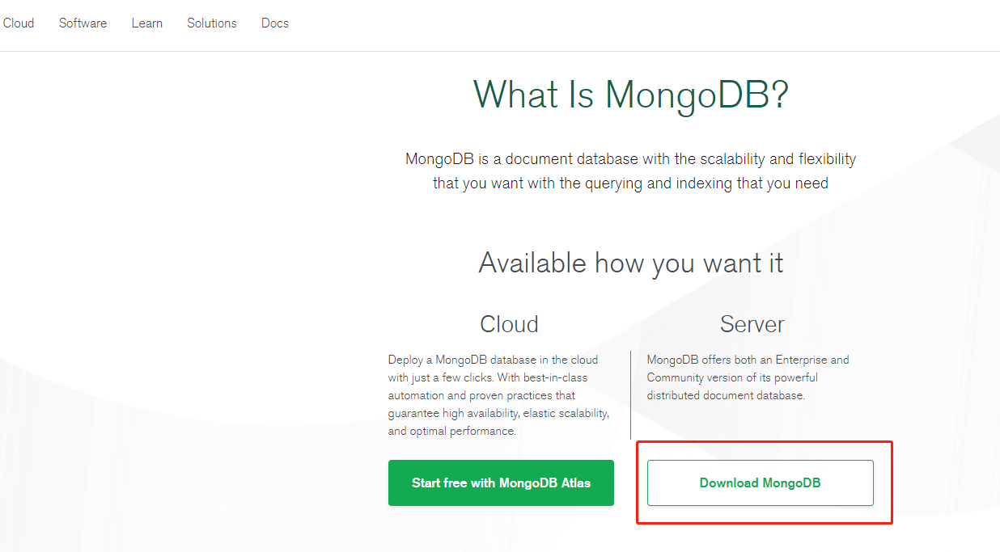
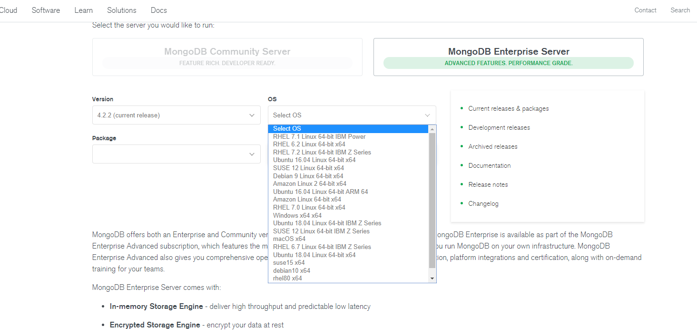
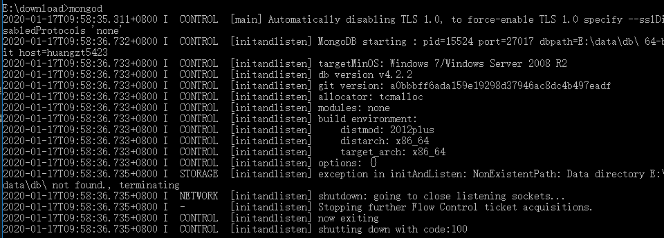
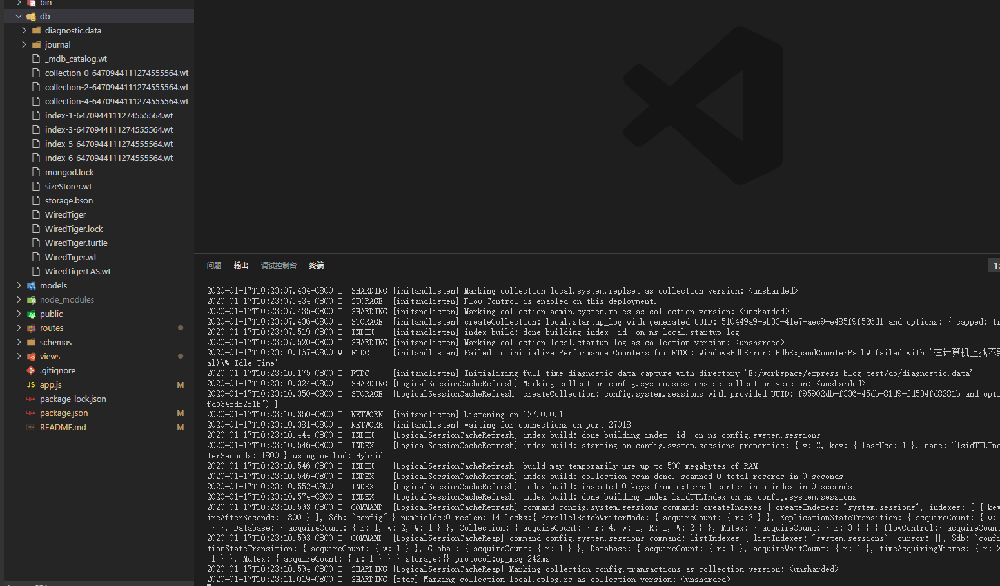
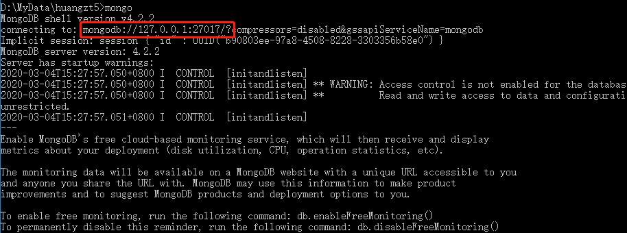
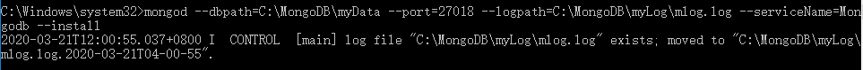
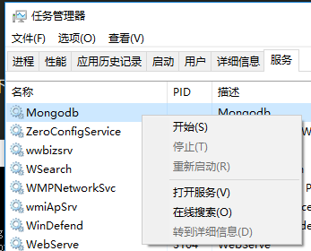
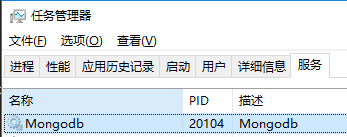

001-在win的安装
1、下载
我们下载社区免费版就够了，然后根据操作系统选择对应的稳定版本



2、安装
下载好的双击一直下一步即可
在安装的目录中找到bin文件夹，将其添加到电脑的环境变量上。这样就可以在cmd任意访问
cmd执行mongod看到下面界面说明配置成功

3、启动
执行 mongod --dbpath=C:\MongoDB\myData --port=27017
- --dbpath 要在哪个文件夹创建数据库
- --port 要用什么端口启动，默认27017

过后如果忘记端口了，想要查看可以执行mongo，得到下面结果:

mongod是服务端命令，用来启动暂停服务之类。 mongo是客户端命令，在服务端启动后可以用客户端命令增删改查等操作
上面的mongod --dbpath=E:\workspace\express-blog-test\db --port=27018启动的是临时服务，如果cmd停掉或者关闭，则mongodb服务跟着停止
所以需要做下面的步骤，把mongod注册为一个服务，每次开机自动启动
4、注册window服务
如果想要启动一个支持的服务，可以加上参--serverName，如果想要打上日志可以加参数--logpath
比如执行下面代码（需要用管理员运行cmd才有权限）:
mongod --dbpath=C:\MongoDB\myData --port=27017 --logpath=C:\MongoDB\myLog\mlog.log --serviceName=Mongodb --install
这条命令会往window服务上注册名为Mongodb的服务，启动提示如下:

注册成功后，需要自己再去任务管理器-服务查看启动下

现在关闭了cmd，mongodb也会运行在后台，可以通过

5、删除window服务
首先要把服务停掉，然后用管理员执行下面命令
sc delete Mongodb